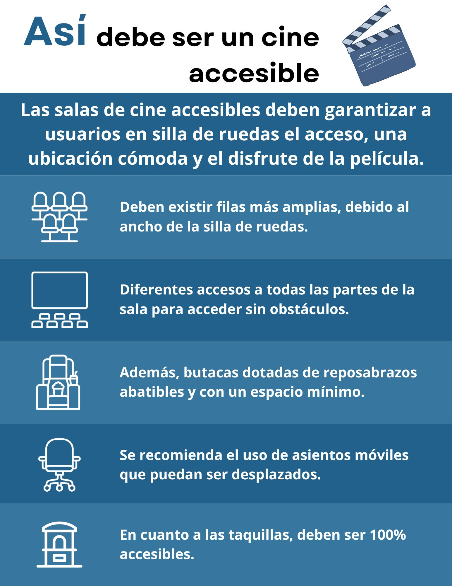

Transcripción
Así debe ser un cine accesible
-
Las salas de cine accesibles deben garantizar a usuarios en silla de ruedas el acceso, una ubicación cómoda y el disfrute de la película.
-
Deben existir filas más amplias, debido al ancho de la silla de ruedas.
-
Diferentes accesos a todas las partes de la sala para acceder sin obstáculos.
-
Además, butacas dotadas de reposabrazos abatibles y con un espacio mínimo.
-
Se recomienda el uso de asientos móviles que puedan ser desplazados.
-
En cuanto a las taquillas, deben ser 100% accesibles.